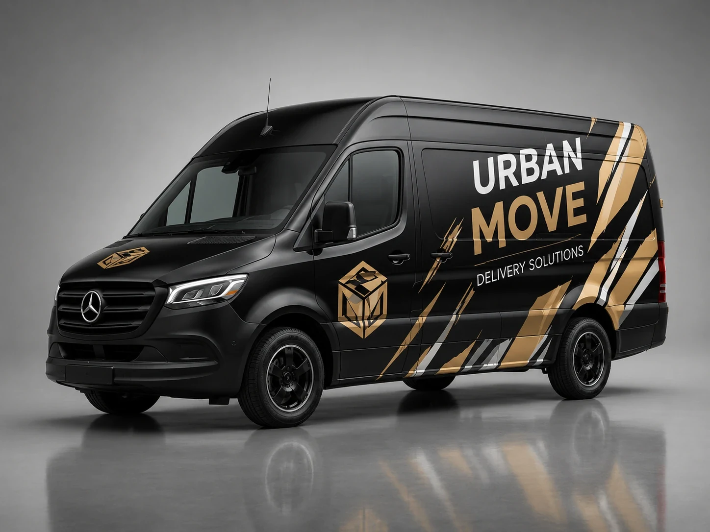
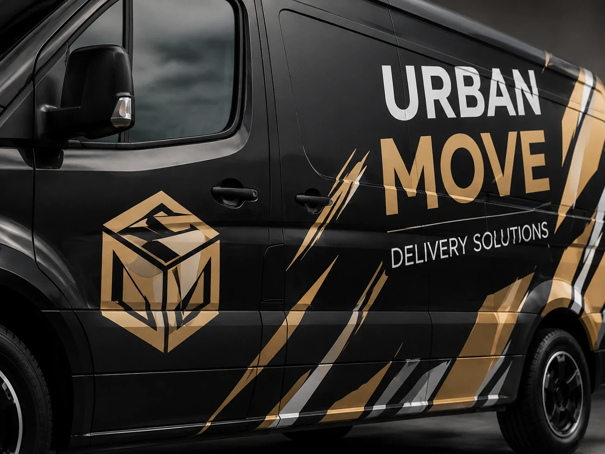

01
Défi
Créer un marquage capable d’être identifié en quelques secondes sur un véhicule en mouvement, sans sacrifier une perception premium ni surcharger la carrosserie.
Une identité visuelle forte pour un véhicule de livraison, pensée pour paraître premium à l’arrêt et rester immédiatement reconnaissable en circulation.

Étude conceptuelle créée pour démontrer la direction artistique et les applications de production de MAQTA.
Créer un marquage capable d’être identifié en quelques secondes sur un véhicule en mouvement, sans sacrifier une perception premium ni surcharger la carrosserie.
Base Carbon, typographie éditoriale et coupe Oxide diagonale. La composition privilégie la hiérarchie, le contraste et une lecture nette sur les grands panneaux du véhicule.
Flancs, arrière, zones de porte et déclinaisons de visibilité à distance, avec une logique pensée pour la découpe vinyle et la préparation des fichiers de production.
Un système conceptuel cohérent qui transforme le véhicule en support mobile de marque : reconnaissable de loin, lisible de près et visuellement aligné avec une image premium.
IDENTITÉ · VINYLE · HABILLAGE VÉHICULE


